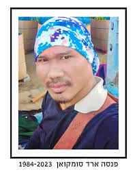

נחל עוז
פנסה ארד סמוקהון ז"ל
אזרח תאילנד, עובד חקלאות
מקום אירוע: נחל עוז
סיפור חיים
פנסה ארד סומקואן ז״ל, בן 39, מנחל עוז, אזרח תאילנד, עובד חקלאות. חבריו לעבודה ומכריו בקיבוץ תיארו אותו כעובד חרוץ, מסור ונאמן, שהיה חלק בלתי נפרד מהעשייה החקלאית בקיבוץ. זכרו הוא חלק מסיפורם של העובדים הזרים שנפגעו באותו יום קשה